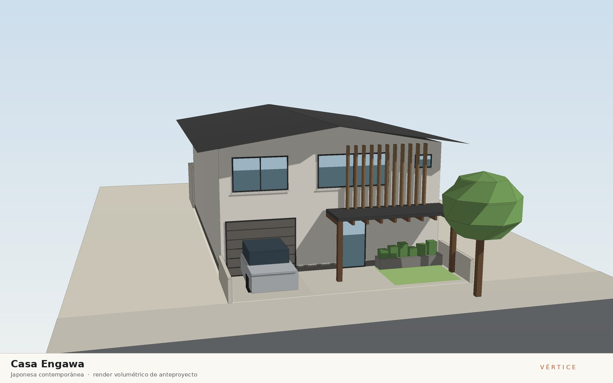
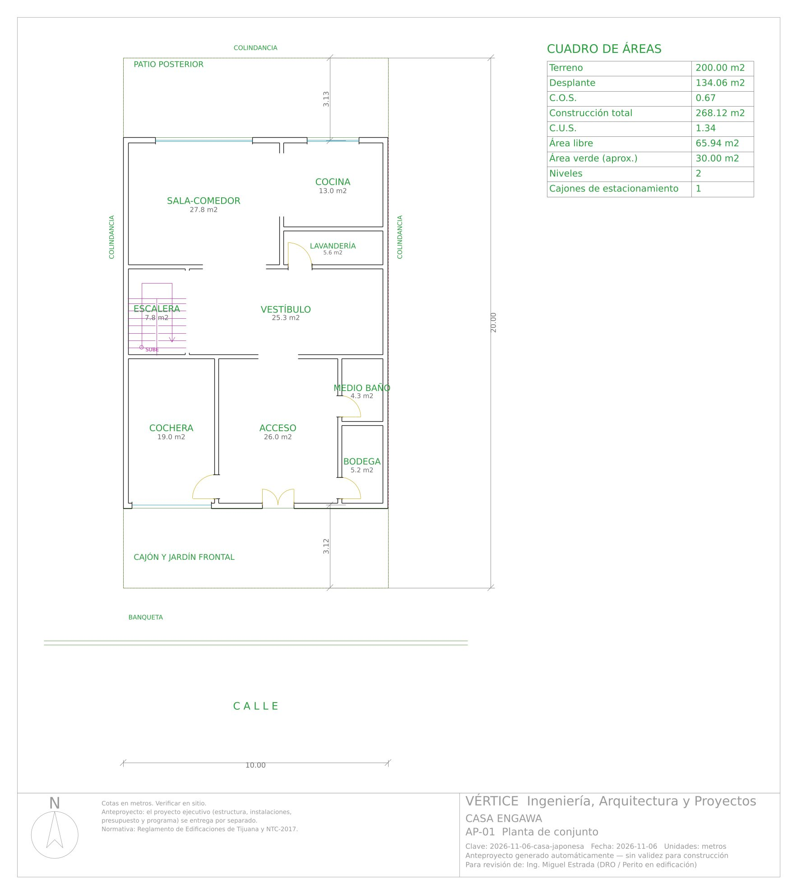
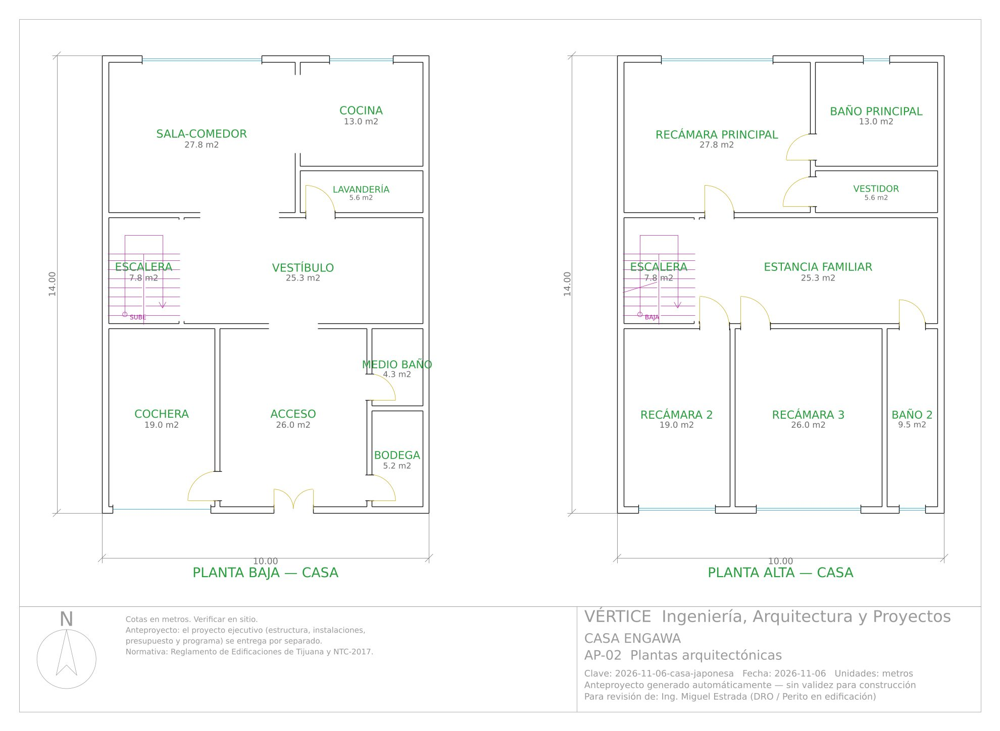
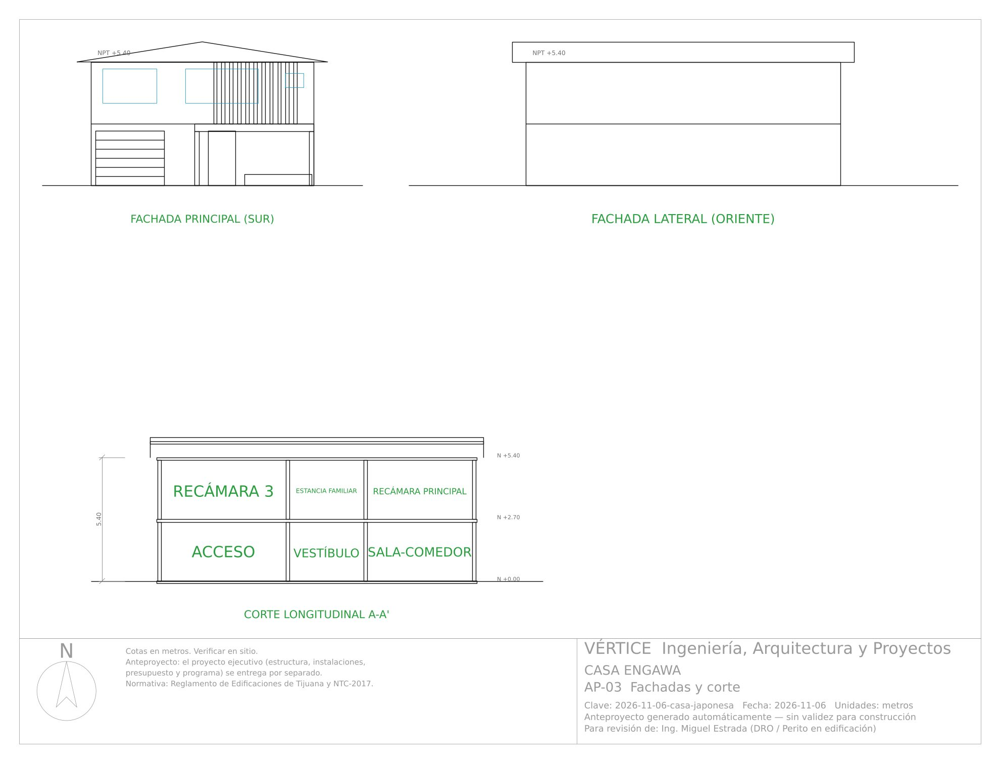

6 de noviembre de 2026 · Casa habitación
Casa Engawa
Corriente: Japonesa contemporánea

Concepto
Vivienda de dos niveles en un lote de 10 x 20 m en Tijuana que interpreta la casa japonesa contemporánea: un volumen sobrio de aplanado claro bajo una cubierta a dos aguas de baja pendiente (18 %), con la cumbrera en el sentido largo del lote y alero amplio de 0.90 m que sombrea los muros del sol fuerte del sur y desaloja con rapidez las lluvias de invierno. Un porche de madera sobre el acceso funciona como engawa, el umbral techado entre la calle y la casa, y conduce a un acceso amplio tipo genkan y a una sala-comedor abierta al jardín posterior, por donde entra luz difusa del norte y la brisa marina cruza la casa. En planta alta, el corredor se convierte en estancia familiar que reparte a las recámaras, y una celosía de listones de madera filtra el sol del sur frente a la recámara 3 sin cerrar la vista. Una jardinera de concreto con grava y bambú al frente suaviza el paso de la banqueta al interior, como el roji de un jardín de té.
Dictamen del arquitecto
- Terreno de 10.00 x 20.00 m (200 m²); casa de 9.75 x 13.75 m a ejes entre colindancias oriente y poniente, 268.1 m² construidos en 2 niveles con desplante de 134.1 m²: COS 0.67 y CUS 1.34 (por verificar con el PDU de Tijuana); 3.00 m libres al frente con cajón y jardinera, patio posterior de 3.25 m con tanque de gas a nivel de piso.
- Recorrido: puerta doble de 1.20 m bajo el porche → acceso (4.65 x 5.60 m, tipo genkan) con medio baño, bodega y paso a cochera → vestíbulo con escalera en U → sala-comedor (5.85 x 4.75 m) comunicada con la cocina (3.90 x 3.33 m), lavandería desde el vestíbulo. Escalera de 1.15 m de tramo, peralte 16.9 cm, huella 30.2 cm (2p+h = 64 cm).
- Planta alta: el corredor de 3.40 x 7.45 m se proyecta como estancia familiar (antes 'Pasillo' en el programa base) que da acceso a las recámaras 2 (3.40 x 5.60 m) y 3 (4.65 x 5.60 m) y al baño 2; recámara principal de 5.85 x 4.75 m con vestidor y baño sólo desde ella. Todas las recámaras con ventana al exterior; altura libre 2.56 m (PB) y 2.57 m (PA) ≥ 2.30 m. Medio baño sin ventana: extractor obligatorio.
- Lenguaje japonés contemporáneo: cubierta a dos aguas de lámina al 18 % con alero de 0.90 m, porche de madera sobre el acceso, celosía de listones en planta alta al sur y jardinera frontal; AP-03, A-04, A-05, A-06 y renders muestran la misma geometría de cubierta.
- Correcciones de motor en revisión: la fachada lateral de un dos aguas se dibujaba como una sola agua (AP-03) o como cuatro aguas (A-05); los cortes dibujaban el hastial en el sentido equivocado y pretiles inexistentes; AP-03 omitía porche y jardinera; el rótulo del porche decía 'cubierta de teja' y se encimaba con la celosía; el sofá de la estancia familiar invadía el abatimiento de la puerta del baño 2; IS-01 mostraba pendientes de azotea plana; y el presupuesto cobraba un pretil que no existe.
Dictamen de ingeniería
- Veredicto: construible conforme a norma — 0 errores y 0 avisos en 29 verificaciones de coordinación —, sujeto a los supuestos por validar indicados abajo.
- Mampostería confinada con block de 15 cm en ambas direcciones, castillos K-1 15x20 (43 por nivel) y dalas D-1; todos los muros de planta alta apoyados en muros de planta baja. Método simplificado NTC: X VR 65.8 t ≥ Vu 56.6 t (dirección crítica, margen 16 %); Y VR 88.6 t ≥ 56.6 t; V basal 51.4 t con c/Q'R = 0.213 supuesto y T = 0.17 s.
- Losa de entrepiso de 14 cm y de azotea de 13 cm, macizas, con #3 @ 10–20 cm; 9 trabes de cerramiento de 15x30 a 20x35 cm (claro máximo 3.81 m); escalera de losa de 14 cm. La cubierta de lámina (30 kg/m²) va sobre armadura ligera de PTR anclada a la losa; sin pretil, por lo que se eliminaron la dala D-2 y el block de pretil del presupuesto.
- Zapatas corridas de 50 x 20 cm: ZC-1 perimetral (q = 5.12 t/m², excéntricas en los linderos oriente y poniente) y ZC-2 interior (q = 8.63 t/m²) contra una q adm supuesta de 12 t/m² a -0.80 m: requiere estudio de mecánica de suelos y confirmar el espectro sísmico del sitio. Cuantificación: 5,689 kg de acero y 63.4 m³ de concreto.
- Instalaciones: toma Ø13 mm, 22 UM (1.21 L/s), alimentación Ø25 mm, cisterna de 2 m³ con hidroneumático y calentador de paso; bajadas sanitarias de baño 2 y baño principal junto a muro, colector al 2 % a la red CESPT; gasto pluvial de 3.7 L/s por canalón perimetral a 2 bajadas Ø100 mm; 13 circuitos (12.9 kW instalados, 9.0 kW de demanda, 45.7 A), interruptor general 2P-60 A, desbalance 0.3 %; gas LP con tanque estacionario de 300 L en el patio posterior a nivel de piso. Factibilidades de CESPT y CFE por tramitar.
- Presupuesto de $1,530,733 + IVA ($5,709/m²) y programa de 18 semanas; la cubierta de lámina, el canalón y el porche quedan en la hoja "Por cotizar" (36 partidas) hasta tener cotización de proveedores de Tijuana. La celosía de madera y la jardinera frontal todavía no están cuantificadas: agregarlas a la cotización.
Materiales
Muros de block de concreto con aplanado fino color arroz; cubierta a dos aguas de baja pendiente de lámina engargolada color grafito sobre armadura ligera de PTR y losa de concreto impermeabilizada; porche (engawa), celosía y plafón de alero de madera termotratada de pino en tono claro; jardinera de concreto aparente con grava y bambú; pisos de porcelanato 60x120 rectificado tono piedra gris claro en zonas secas y antiderrapante 60x60 en baños; cancelería de aluminio negro mate con vidrio claro de 6 mm; puerta de acceso de madera de parota
Vistas

Anteproyecto — descargas
Láminas del anteproyecto






Proyecto ejecutivo
Proyecto ejecutivo completo — 17 láminas. Se entrega por separado; no se publica en esta galería.
Revisión de coordinación arquitectura–estructura–instalaciones–acabados y normativa: Sin errores · 0 avisos en 29 verificaciones.
Arquitectónico
- A-01 Planta de conjunto
- A-02 Plantas arquitectónicas amuebladas
- A-03 Plantas acotadas a ejes
- A-04 Planta de azotea
- A-05 Fachadas
- A-06 Cortes arquitectónicos
- A-07 Cancelería y acabados
Estructural
- E-01 Planta de cimentación
- E-02 Losas, trabes y castillos
- E-03 Detalles estructurales
- E-04 Cuantificación de acero y concreto
Instalaciones
- IH-01 Instalación hidráulica
- IS-01 Instalación sanitaria y pluvial
- IE-01 Instalación eléctrica
- IG-01 Instalación de gas LP
- IH-02 Isométrico hidráulico
- IE-02 Cuadro de cargas y diagrama unifilar
Incluye: Memoria técnica (Word/PDF) · Presupuesto (Excel) · Programa de obra (Excel y Gantt) · Juego de planos (PDF y DXF)
Revisión de calidad
Sin errores · 1 avisos
| Tipo | Nivel | Observación |
|---|---|---|
| Aviso | Casa · Planta baja | Medio baño: ventilación mecánica (extractor) obligatoria. |
Cuadro de áreas
Ver los 17 espacios
| Bloque | Nivel | Espacio | Medidas (m) | Área (m²) |
|---|---|---|---|---|
| Casa | Planta baja | Cochera | 3.40 x 5.60 | 19.04 |
| Casa | Planta baja | Acceso | 4.65 x 5.60 | 26.04 |
| Casa | Planta baja | Bodega | 1.70 x 3.08 | 5.24 |
| Casa | Planta baja | Medio baño | 1.70 x 2.52 | 4.28 |
| Casa | Planta baja | Escalera | 2.30 x 3.40 | 7.82 |
| Casa | Planta baja | Vestíbulo | 7.45 x 3.40 | 25.33 |
| Casa | Planta baja | Sala-comedor | 5.85 x 4.75 | 27.79 |
| Casa | Planta baja | Lavandería | 3.90 x 1.43 | 5.56 |
| Casa | Planta baja | Cocina | 3.90 x 3.33 | 12.97 |
| Casa | Planta alta | Recámara 2 | 3.40 x 5.60 | 19.04 |
| Casa | Planta alta | Recámara 3 | 4.65 x 5.60 | 26.04 |
| Casa | Planta alta | Baño 2 | 1.70 x 5.60 | 9.52 |
| Casa | Planta alta | Escalera | 2.30 x 3.40 | 7.82 |
| Casa | Planta alta | Estancia familiar | 7.45 x 3.40 | 25.33 |
| Casa | Planta alta | Recámara principal | 5.85 x 4.75 | 27.79 |
| Casa | Planta alta | Vestidor | 3.90 x 1.43 | 5.56 |
| Casa | Planta alta | Baño principal | 3.90 x 3.33 | 12.97 |
Anteproyecto conceptual generado por el motor Vértice. El predimensionamiento estructural y los cálculos de instalaciones son preliminares y no sustituyen la memoria de cálculo definitiva, el estudio de mecánica de suelos ni la revisión y firma del DRO y corresponsables.